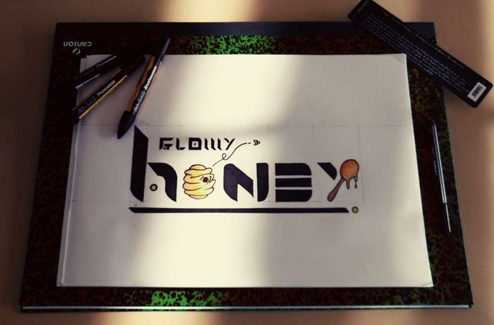

Glowy Honey Project
Ce projet est la création d'une entreprise fictive qui œuvre dans l'industrie de la mode et du maquillage. La home de Glowy Honey fut pour moi une occasion de mettre en valeur l'aspect haute gamme de la marque que j'ai créé.
Pour donner ce rendu, j'ai opté pour des couleurs sobres et douces marquant une ambiance chaleureuse, s'additionnant à un design minimaliste qui permet un visuel aéré. La typographie des textes que j'ai choisit m'a permit de marqué une touche de modernité sur cette nouvelle enseigne, et la typographie numérique est choisit de sorte à exposer le côté raffiné de la marque.

Le logo
J'ai créé le logo dans le but de mettre en avant le thème de la marque et son esprit penché sur le naturel. En effet, le produit phare de Glowy Honey ce sont des produits de cosmétiques à base de miel.
Le projet
Le projet à commencé en juin 2019 avec des idées et des passions. Je suis passé d'un simple croquis à l'élaboration d'une typographie, d'une réalisation sur support informatique. Enfin, après avoir établie le concept de la marque, j'ai élaboré un design web pour présenter son contenu.
-
